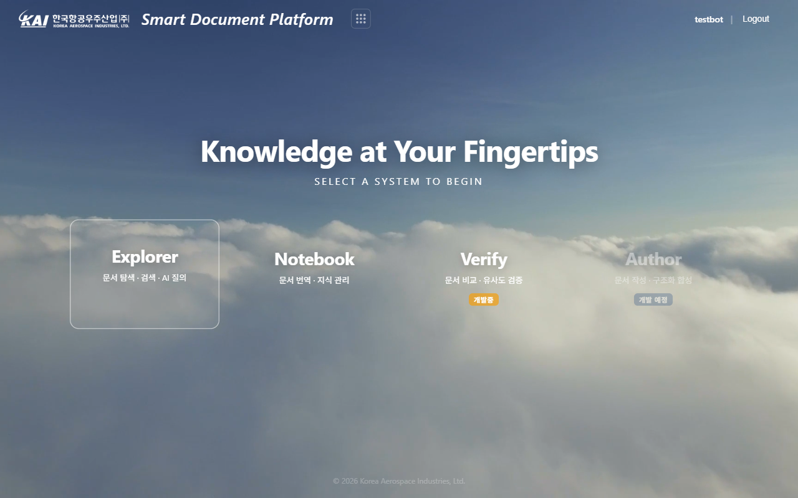
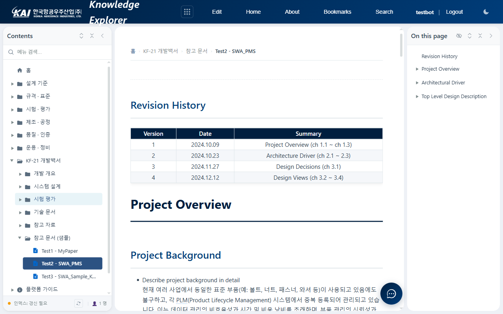
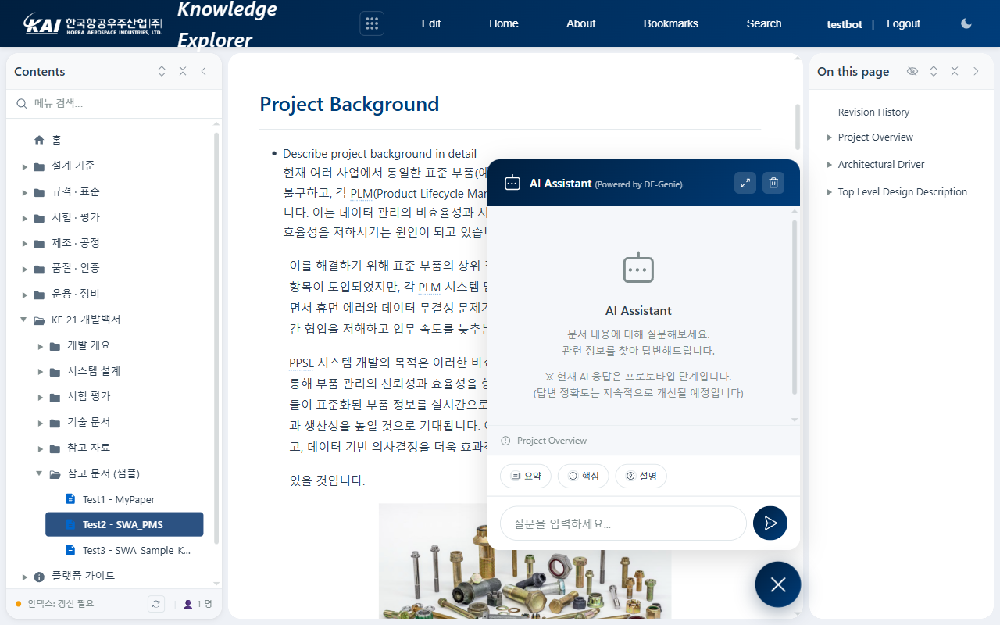
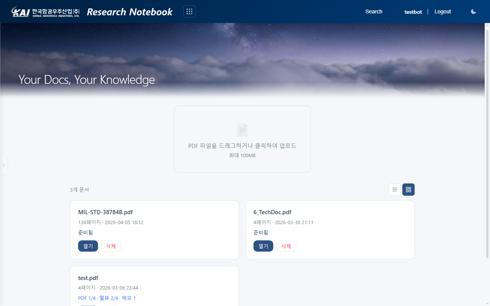
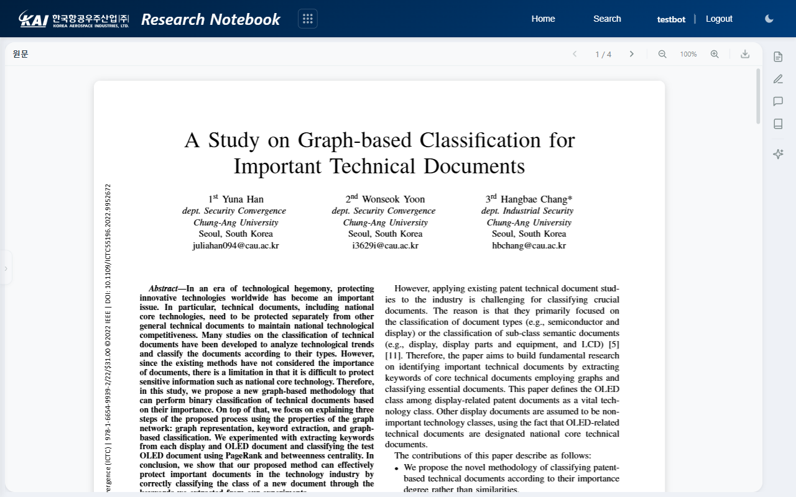
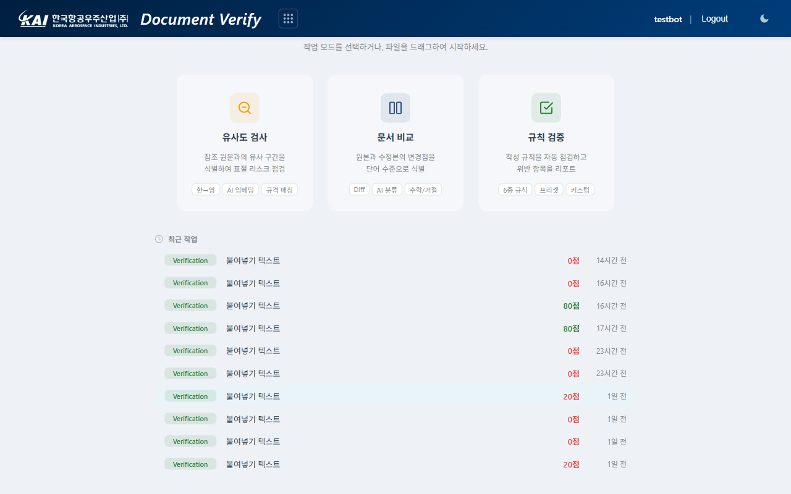

Smart Document Platform — 항공우주 기술 지식 관리 시스템
KAI 내부망 환경에서 동작하는 기술 문서 플랫폼입니다. 외부 클라우드 없이 조직 내 기술 자산을 검색하고, 해외 논문을 번역·분석하며, 작성 문서의 품질을 검증합니다.
Smart Document Platform은 항공우주 기술 문서 관리의 세 가지 과제를 해결합니다. 첫째, 수천 페이지 기술 문서에서 원하는 정보를 찾는 시간을 줄입니다. 둘째, 영어 논문과 규격을 한국어로 번역하여 연구 효율을 높입니다. 셋째, 문서 작성 품질을 자동으로 점검하여 인적 오류를 줄입니다.
플랫폼은 인터넷 연결 없이 조직 내부망에서 동작합니다. KAI AI 인프라(DE-Genie/Ollama)를 활용하여 기술 자산이 외부로 유출되지 않으며, Explorer, Notebook, Verify 세 개의 서브시스템과 관리자 런처로 구성됩니다.

플랫폼 런처 — 각 서브시스템 진입점. 역할 기반 접근 제어(RBAC)로 권한 관리.
4개 서브시스템이 기술 문서 생애주기 전반을 커버합니다.
기술 문서 전체를 대상으로 하이브리드 RAG 검색(키워드 + 벡터)을 제공하는 지식 탐색 시스템입니다. 문서 트리를 통한 직접 탐색과 AI 채팅을 통한 자연어 질의응답을 지원하며, 검색 결과는 관련 섹션으로 자동 이동합니다.

Explorer — 문서 트리 + 섹션 네비게이션

Explorer — AI 어시스턴트 (문서 기반 Q&A)
영문 기술 논문 및 규격 PDF를 업로드하면 페이지별 AI 번역과 함께 요약, Q&A, 마인드맵, 마킹 등 분석 도구를 제공하는 연구 노트 시스템입니다. 원문 PDF와 번역 결과를 나란히 비교하는 듀얼 패널 뷰어를 지원합니다.

Notebook — 문서 카드 목록 및 폴더 관리

Notebook — 원문 PDF + 우측 AI 도구 패널
원본 문서와 수정본을 비교하고, 작성 규칙을 자동 점검하며, 유사도를 검사하는 통합 문서 검증 시스템입니다. 21종 규칙 엔진이 번호 연속성, 용어 통일, 문장 길이 등을 검사하고, Acrolinx 방식의 품질 스코어로 문서 완성도를 수치화합니다.

Verify — 유사도 검사, 문서 비교, 규칙 검증 세 가지 모드 선택
규격 문서 작성을 AI가 보조하는 저작 시스템입니다. 템플릿 기반 구조 생성, 요구사항 추적, 참조 문서 자동 인용 등이 계획되어 있습니다. 현재 설계 단계이며, 향후 업데이트를 통해 제공됩니다.
| 가치 | 설명 |
|---|---|
| 정보 접근 단축 | 수천 페이지 기술 문서에서 원하는 정보를 수 초 내 검색. 하이브리드 RAG로 의미 기반 검색 지원. |
| 언어 장벽 해소 | 영문 논문 및 규격을 한국어로 번역. 원문 레이아웃을 보존하며 전문 용어 정확도 유지. |
| 보안 내재화 | 폐쇄망 온프레미스 운용. 기술 자산이 외부 클라우드에 전송되지 않아 보안 규정 준수. |
| 품질 자동 검증 | 21종 규칙 엔진으로 작성 기준 자동 점검. 리뷰 시간 단축, 문서 완성도 수치화. |
| 통합 지식 관리 | 설계, 시험, 규격, 운용 문서를 단일 인터페이스에서 탐색. 팀 간 지식 공유. |
| 확장 가능 구조 | 관리자 콘솔에서 콘텐츠, 메뉴, 설정을 관리. 코드 수정 없이 플랫폼 확장 가능. |
| 항목 | 사양 |
|---|---|
| 운용 환경 | 폐쇄망(Air-gap) 온프레미스, 인터넷 연결 불필요 |
| 백엔드 | Python 3.11, FastAPI, Uvicorn (비동기 처리) |
| 프론트엔드 | Vanilla JS (프레임워크 미사용), 단일 HTML 파일 구조 |
| AI 엔진 | DE-Genie / Ollama (LLM), bge-m3 (임베딩), bge-reranker-v2-m3 (리랭커) |
| 검색 엔진 | FAISS (벡터) + BM25 (키워드), RRF 하이브리드 병합, Recall@5 = 100% |
| PDF 번역 | pdf2zh (레이아웃 보존), PyMuPDF4LLM (마크다운 추출) |
| 접근 제어 | 3단계 RBAC — viewer, editor, admin |
| 지원 포맷 | 콘텐츠: HTML(웹북) / 업로드: PDF / Verify 입력: DOCX, PDF, 텍스트 |
| 데이터 저장 | JSON 파일 기반, SQLite(분석), 원자적 저장(data-loss 방지) |
| 운용 포트 | 백엔드 8000, 프론트엔드 8080 (정적 파일 서버) |
플랫폼은 두 개의 프로세스(백엔드 + 정적 파일 서버)로 구동됩니다. 별도 빌드 과정이나 외부 서비스 연동이 불필요합니다.
| 역할 | 명령 | 접속 주소 |
|---|---|---|
| 백엔드 API | cd backend && python main.py |
http://localhost:8000 |
| 프론트엔드 | python -m http.server 8080 |
http://localhost:8080 |
관리자 권한으로 로그인하면 Explorer 상단에 Edit 메뉴가 활성화됩니다. 콘텐츠 파일(HTML 웹북)을 업로드하고, 메뉴 트리를 드래그앤드롭으로 재구성하며, AI, 검색, 보안 설정을 GUI에서 조정할 수 있습니다.
계정은 data/users.json에서 관리하며, 역할(viewer, editor, admin)에 따라
콘텐츠 조회, 편집, 관리자 기능 접근이 구분됩니다.
초기 관리자 계정 설정 후 팀별로 viewer 계정을 배포하여 운용합니다.